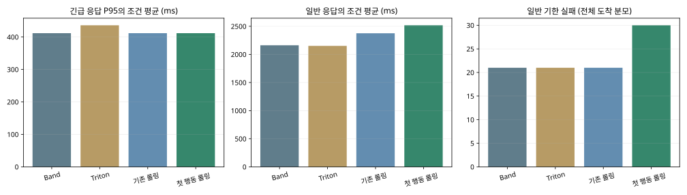
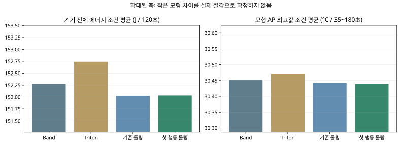
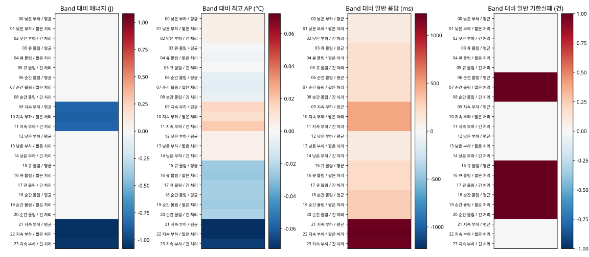
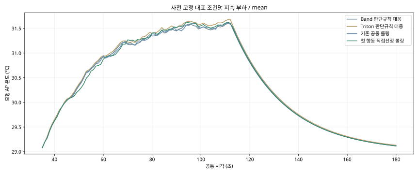
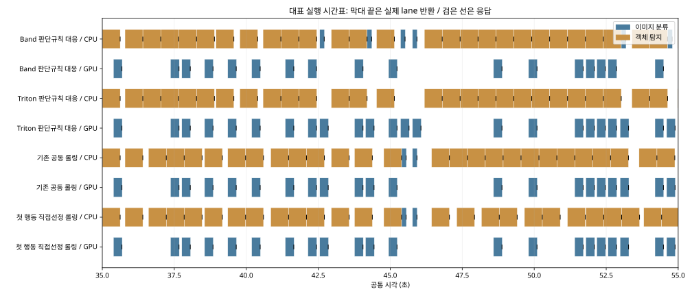

새 온도 보정 모형 × 공동 롤링
유망 기준 미달 · 새 정책 채택 보류
24조건 × 4정책 = 96행 · gate4 · 학습/적합/기기 실행0 · 전체 요청6336/6336 완료
새 v3 hybrid를 정책의 후보 예측과 최종 AP 계산 모두에 사용했습니다. CPU/PAR 각각1회에서 평균오차가 줄었지만 피크오차는 일부 악화했습니다. 이 결과는 제한된 모형 탐색이며 실제 휴대폰 절감·외부 제품 전체의 우열을 증명하지 않습니다. 처리시간·에너지는 기존 모형과 같고 냉각→속도회복은 미지원입니다.
한국어 판독 · 실행 전 계약 · 전체96행 · 조건별 차이 · 판단·대기·점유 · 전체 판정
판단 규칙의 차이
| 규칙 | 순서 | 자원 | 대기 | 열 |
|---|
| Band 판단규칙 대응 | 작업비용·완료 예상 기반 | whole-request CPU/GPU 대응 | 자원 사건 | 목적항 없음 |
| Triton 판단규칙 대응 | 모델별 요청 큐 | 분류GPU / 탐지CPU 고정 | instance 반환 | 목적항 없음 |
| 기존 공동 롤링 | 창4 / 과업 내 EDD / 원8선별 | 전체 계획 선정 후 첫 행동 검사 | 최대0.25초 / 사건 취소 | 새 v3 head |
| 첫 행동 직접선정 롤링 | 같은 창4 / EDD / 원8선별 | 실제 첫 행동을 직접 비교 | 최대0.25초 / 사건 취소 | 같은 새 v3 head / 전체최고 보호 |
정책별 결과
새 직접선정은 평균 비용이 줄었어도 일반 기한실패21→30건으로 채택할 수 없습니다. 기존 공동 롤링은21건을 유지해 상대적으로 안정적이지만 일부 조건 비용·응답이 악화했습니다. 기존 기준 정책을 유지합니다.
응답·J·AP는 조건 평균, 기한실패는 전체 건수입니다. 조건별 P95 평균은 pooled P95가 아닙니다. 3문맥은 민감도이며 독립3반복이 아닙니다.
응답과 완료

에너지와 모형온도

조건별 차이 지도

대표 온도경로

대표 실행시간표

대표 조건은 결과 전에 condition9로 고정했습니다. 표면 온도·안전한도 초과시간·폰 제어 에너지는 계산 불가입니다. PC 판단시간은 control_cost.csv에 별도 기록했고 폰 실측 전력으로 환산하지 않았습니다. 기본 정책·strict·experiment_ready=false를 유지합니다.